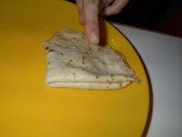

Submitted by: La Maison Francaise
Date: 2003-08-15
Click photo to enlarge
|  |
Ingredients:
3 eggs
1/2 teaspoon salt
1 1/2 cups
2 cups milk
1 tablespoon sugar
2 teaspoons vanilla extract
2 tablespoons melted butter
Instructions
1) Mix eggs and salt in a large bowl. Beat in flour and milk alternately. Add sugar and vanilla; beat until smooth. Add butter.
2) Refrigerate for at least an hour and cook.